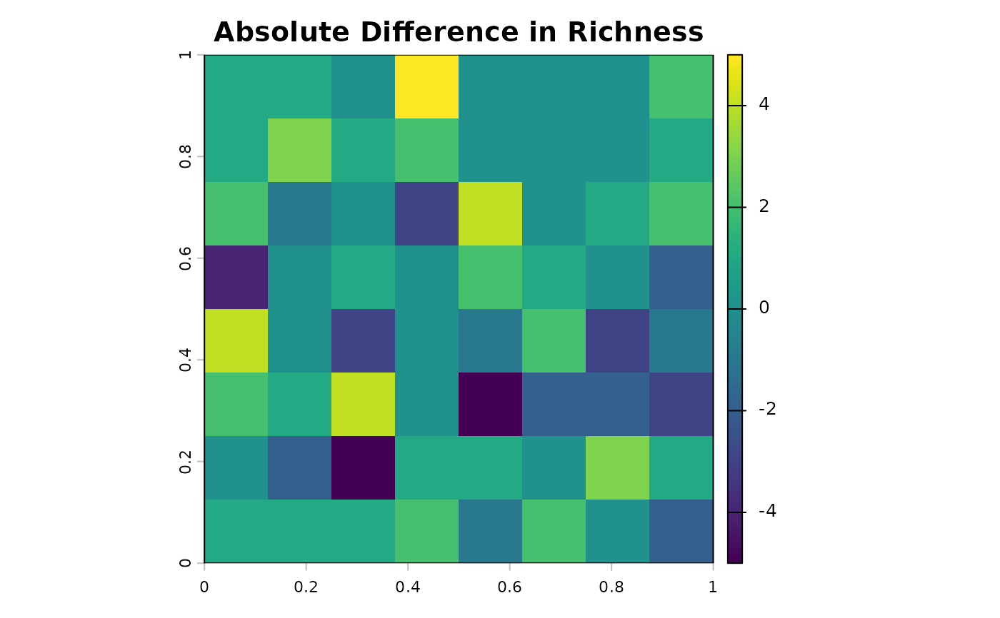
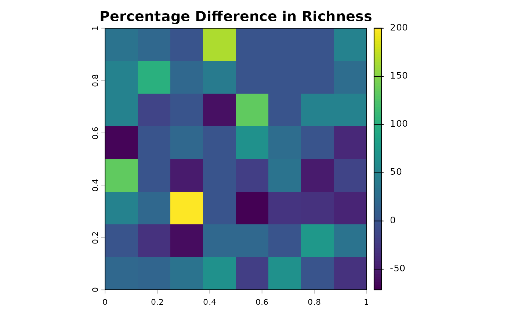

Calculate Absolute or Percentage Difference Between SpatRaster Objects
Source:R/diff_rast.R
differ.rast.RdComputes the difference between two SpatRaster objects, either as an absolute value
or as a percentage of change relative to the first raster (r1).
This function is commonly used to assess changes in spatial patterns, such as
shifts in species richness or environmental variables over time or between scenarios.
Arguments
- r1
A
SpatRasterobject representing the baseline or initial values. Can have one or multiple layers.- r2
A
SpatRasterobject representing the future or comparison values. Must have the same dimensions, resolution, CRS, and number of layers asr1.- perc
Logical (default is
TRUE). IfTRUE, the percentage of change relative tor1is calculated:((r2 - r1) / r1) * 100. IfFALSE, the absolute difference (r2 - r1) is returned.- filename
Character string. Optional path and filename to save the resulting
SpatRaster. Supported formats are those recognized byterra::writeRaster(e.g., ".tif", ".grd"). If provided, theSpatRasterwill be saved to this file.
Value
A SpatRaster object containing the calculated differences.
If
perc = TRUE, the layer name will be "Percentage_Difference".If
perc = FALSE, the layer name will be "Absolute_Difference".
The output SpatRaster will have the same dimensions, resolution, and CRS as
the input rasters.
Details
This function performs a cell-wise subtraction (r2 - r1).
For percentage difference, the formula used is
((r2 - r1) / r1) * 100. Cells wherer1isNAor0will result inNAin the outputSpatRasterfor percentage calculations, to avoid division by zero or meaningless percentages.It is crucial that
r1andr2are aligned spatially (same extent, resolution, and Coordinate Reference System - CRS) and have the same number of layers, with corresponding layers representing the same variable or species.
Examples
library(terra)
# Load rasters
rich1 <- terra::rast(system.file("extdata", "rich_ref.tif",
package = "divraster"))
rich2 <- terra::rast(system.file("extdata", "rich_fut.tif",
package = "divraster"))
# Calculate absolute difference in richness
abs_diff_rast <- differ.rast(rich1, rich2, perc = FALSE)
abs_diff_rast
#> class : SpatRaster
#> size : 8, 8, 1 (nrow, ncol, nlyr)
#> resolution : 0.125, 0.125 (x, y)
#> extent : 0, 1, 0, 1 (xmin, xmax, ymin, ymax)
#> coord. ref. : lon/lat WGS 84 (EPSG:4326)
#> source(s) : memory
#> varname : rich_fut
#> name : Absolute_Difference
#> min value : -5
#> max value : 5
plot(abs_diff_rast, main = "Absolute Difference in Richness")

# Calculate percentage difference in richness
perc_diff_rast <- differ.rast(rich1, rich2, perc = TRUE)
perc_diff_rast
#> class : SpatRaster
#> size : 8, 8, 1 (nrow, ncol, nlyr)
#> resolution : 0.125, 0.125 (x, y)
#> extent : 0, 1, 0, 1 (xmin, xmax, ymin, ymax)
#> coord. ref. : lon/lat WGS 84 (EPSG:4326)
#> source(s) : memory
#> varname : rich_fut
#> name : Percentage_Difference
#> min value : -71.42857
#> max value : 200.00000
plot(perc_diff_rast, main = "Percentage Difference in Richness")
